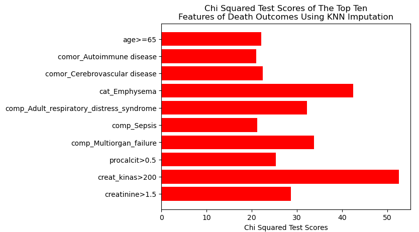
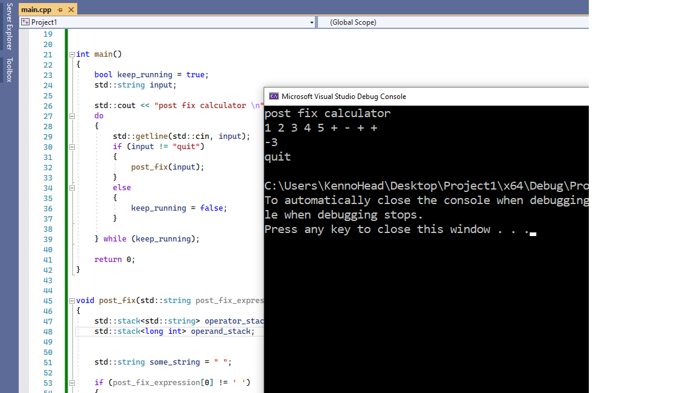

Most of my friends and some of my former co-workers on projects or classmates would know I used to have shoulder-length hair and a beard that spanned down to the top of my chest. Good times... Since California officially lifted many of the Covid-19 restrictions, I had my hair short again and said good-bye to my beard.
Now onto the who I am. If you want the TL;DR, look on the right side.
I graduated from California State University, Los Angeles (CSULA) with a Bachelor's of Science in Computer Science in May 2021. I was awarded Summa Cum Laude for having a 3.923 GPA, though I personally feel like I don't deserve it. My former co-workers and classmates would say otherwise. My elective studies focused on Data Science, Machine Learning, Relational Databases, Artificial Intelligence, Cryptography, and Intelligent Agents in Learning Environments (my focus was Game-Based Learning). I personally believe that CSULA is a school for reformers, or for people who want to change.
TL;DR
I'm Computer Science a graduate from California State University, Los Angeles, looking for a software engineering, data analyst, or machine learning role in the Greater Los Angeles Area.
Recent Projects

This was one of the hardest projects I've worked on. BUT, it was
a very interesting experience. I've learned a lot while working with
other great people. My teammates were very cooperative and helpful.
It gave me a taste...
a very interesting experience. I've learned a lot while working with
other great people. My teammates were very cooperative and helpful.
It gave me a taste...

You're probably wondering why I wrote this. I came across a person on Discord
who had a friend that needed help writing a post fix calculator program for a C++ class.
My motivation to help that person (that I don't know personally)...